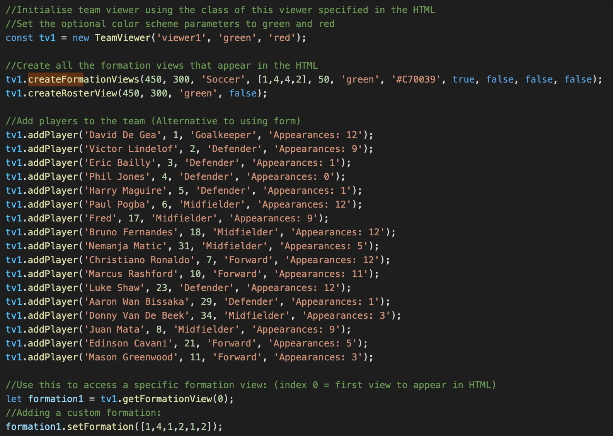
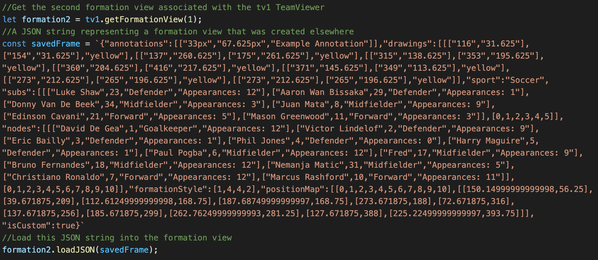
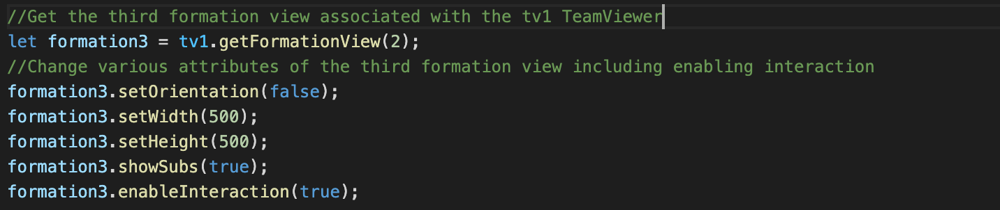
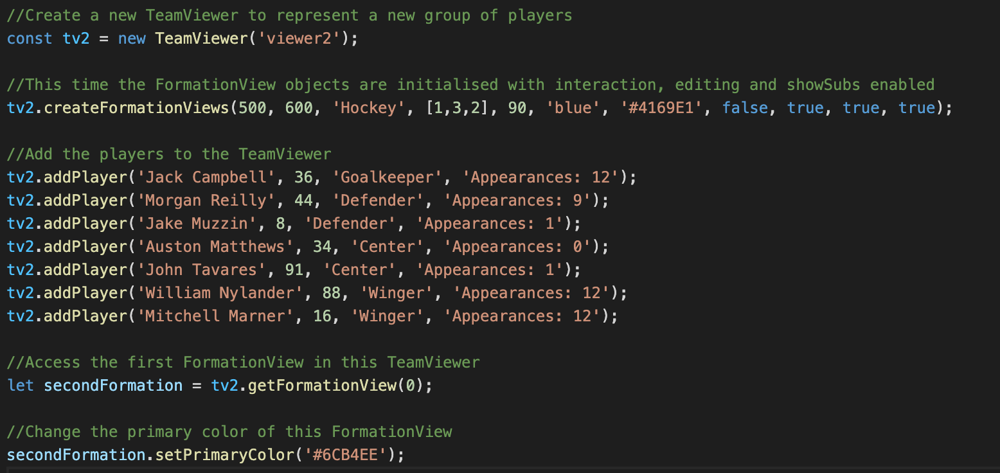
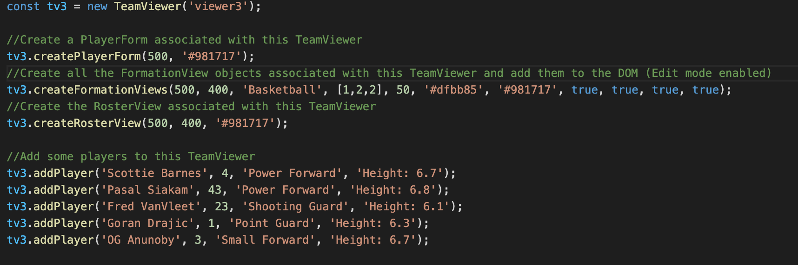
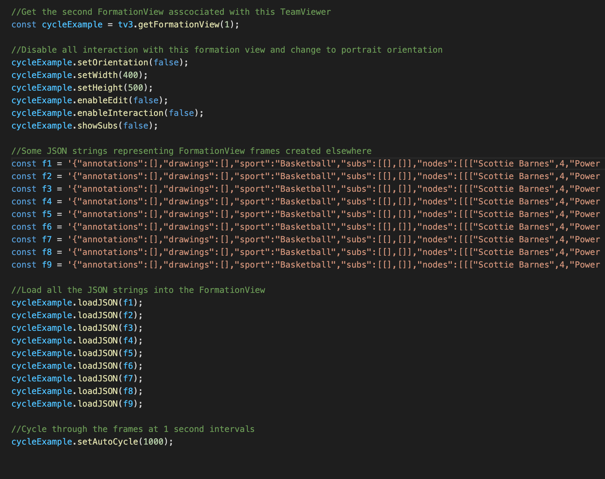

Intro
TeamViewer.js is a javascript library that allows the developer to
display sports team information in various formats. TeamViewer.js consists of three main visual components;
'FormationView', 'RosterView' and 'PlayerForm'. 'FormationView' is the most feature-rich part of the library,
it allows the user to view members of a sports team as nodes on a field. 'RosterView' allows
the user to see the members of the sports team in list format. 'PlayerForm' is a form that allows the
user to add players to either of these views. A 'TeamViewer' represents
a single group of players, it is what links all of the visual components together. Any components
linked to the same 'TeamViewer' represent the same
player group. The developer is able to choose the level
of interaction the user has with each of these components and customise them individually. Potential use cases
and the varying levels of user interaction are exampled below.
Examples
Displaying Pre Defined Teams
In the most basic use case, TeamViewer can be used to display
teams that the developer has already defined. The developer can
disable any user interaction with the TeamViewer components.
FormationView
RosterView
See Code For This Example

Loading From JSON
FormationView
An alternative way of displaying pre defined teams is using JSON.
'FormationViews' can be converted to JSON strings and loaded at a later time. This means it
is possible for the developer to create a 'FormationView' in a private
page of the app where they have access to the edit functionality. The developer can then save
the 'FormationView' and load it to a public page on the web app where edit functionality is
disabled.
See Code For This Example

Interactive Nodes
The next level of user interaction sees the user able to click on nodes
to expand them and reveal more information about the players.
Notice this example features a substitutes list; a sub-component of 'FormationView'
which allows the user to see all the players who are in the squad, but not in
starting team. The nodes in this substitutes list are also expandable. Another thing
demonstrated here is the devloper's ability to change the orientation of the
'FormationView'.
See Code For This Example

Fully Editable Formations
With all user interactions enabled the user is able to fully customise a 'FormationView'.
Notice how the developer has the ability to change theme of the component and how this
'FormationView' is representing a different set of players for a different sport.
This example introduces the concept of frames. The user is able to add a new frame which can be likened to starting a new page in a book. The user's previous pages are stored and can be cycled through and edited after a new page has been added.
The user can make the following edits to a frame:
1) Click the 'draw' button to enter drawing mode. This allows the user to click two points on the view which will be connected by a colored arrow.
2) Click the 'Annotate' button to enter annotate mode. The user can click a location on the frame to add a comment. Press enter to finalise.
This example introduces the concept of frames. The user is able to add a new frame which can be likened to starting a new page in a book. The user's previous pages are stored and can be cycled through and edited after a new page has been added.
The user can make the following edits to a frame:
1) Click the 'draw' button to enter drawing mode. This allows the user to click two points on the view which will be connected by a colored arrow.
2) Click the 'Annotate' button to enter annotate mode. The user can click a location on the frame to add a comment. Press enter to finalise.
3) Click the bidirectional arrow icon to enter
move player mode. This allows the user to drag and drop nodes to new positions, allowing them to
create custom formations.
4) Click the plus button to add a new frame. Note this is a completely separate instance of the FormationView so edits made to this frame are not applied to the rest of the frame stack.
5) Click the curly arrow to cycle through frames the user has created.
6) If no mode is selected, the default functionality is players can be swicthed when they are dragged and dropped over eachother.
Try using the formation view above to create new frames, edit them and cycle through them.
4) Click the plus button to add a new frame. Note this is a completely separate instance of the FormationView so edits made to this frame are not applied to the rest of the frame stack.
5) Click the curly arrow to cycle through frames the user has created.
6) If no mode is selected, the default functionality is players can be swicthed when they are dragged and dropped over eachother.
Try using the formation view above to create new frames, edit them and cycle through them.
 Multiple frames
Multiple frames
See Code For This Example

Adding and Removing Players
Here a new component of TeamViewer is introduced; the 'PlayerForm'. This can be used to add new players
to an exisiting team list.
As well as this it is possible to remove players from a team by clicking remove in the 'RosterView' player entry or clicking remove in the expanded pitch node. The component must have the 'editable' user interaction enabled to display these remove buttons.
The key thing to note here is that multiple views can be used to represent the same group of players, if a player is removed it is removed from all components connected to that group of players.
As well as this it is possible to remove players from a team by clicking remove in the 'RosterView' player entry or clicking remove in the expanded pitch node. The component must have the 'editable' user interaction enabled to display these remove buttons.
The key thing to note here is that multiple views can be used to represent the same group of players, if a player is removed it is removed from all components connected to that group of players.
See Code For This Example

Auto Cycling
Auto cycling is a feature that allows the developer to automatically cycle through a sequence of
'FormationView' frames. An example of where this can be useful is when the developer wishes to
player movements over the course of a came or training session.
See Code For This Example
